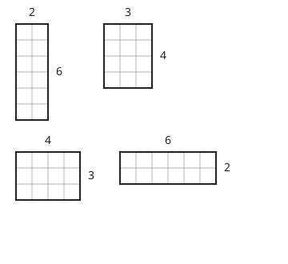

Antiproportionale Zuordnungen
Mit einem KI-Tutor lernen
Ein KI-Tutor erklärt dir diese Seite und hilft dir bei den Aufgaben. Wähl deinen Assistenten:
Mit Claude öffnen Mit ChatGPT öffnen Mit Mistral Vibe öffnen
Du nutzt dein eigenes Konto beim Anbieter. Der Assistent ist kein Angebot von lernapps.net: lernapps liefert nur Inhalte und Aufgaben. Die Wahl gilt für alle Seiten, nur auf diesem Gerät.
Mehr Pumpen, weniger Zeit
Ben füllt das Becken. Mit 1 Pumpe dauert es 12 Stunden, mit 2 Pumpen nur 6 Stunden. Je mehr Pumpen, desto kürzer die Zeit. Nach dieser Seite erkennst du solche antiproportionalen Zuordnungen. Schiebe den Regler und vergleiche in der Tabelle die Pumpenzahl mal die Zeit.
Term: y = 12 : x
Bewege den Regler: Term, Tabelle und Graph ändern sich gleichzeitig.
| Pumpen | 1 | 2 | 3 | 4 | 6 |
|---|---|---|---|---|---|
| Zeit (h) | 12 | 6 | 4 | 3 | 2 |
Das Produkt aus x und y ist immer 12. Wird x größer, wird y kleiner: die Kurve fällt und berührt die Achsen nicht.
Für = 12 gehören zu 1, 2, 3, 4, 6 Pumpen die Zeiten 12 h, 6 h, 4 h, 3 h, 2 h. Pumpen mal Zeit ist immer 12. Der Graph ist eine fallende Kurve, keine Gerade. Für = 24 sind alle Zeiten doppelt so lang.
Das Produkt bleibt gleich
Wenn mehr von der einen Sache weniger von der anderen bedeutet, zum Beispiel mehr Pumpen und weniger Zeit, brauchst du eine andere Regel als bei proportionalen Zuordnungen.

© CC-BY-4.0Vier Rechtecke mit der gleichen Fläche. Wird eine Seite länger, wird die andere kürzer.
- antiproportional
Eine Zuordnung ist antiproportional, wenn zum Doppelten von die Hälfte von gehört. Das Produkt · ist dann immer gleich. Beispiel: 2 Pumpen brauchen 6 h, 4 Pumpen brauchen 3 h, beide Male 12.
Der Graph ist eine fallende Kurve, keine Gerade. Die Kurve verbindet die Punkte, auch wenn es nur ganze Pumpen gibt: Sie zeigt die Form. Du rechnest mit dem Produkt = · . Dann gilt = : . Bei der Pfeiltabelle rechnest du hier links mal 2 und rechts durch 2: Die Pfeile laufen gegeneinander. Beim Dreisatz aus Kapitel 1 waren sie gleich.
Merke
„Je mehr, desto weniger“ reicht nicht. Bei einem Preis von 40 € bleibt nach Gutscheinen zu 5 € noch = 40 − 5 · zu zahlen. Das Produkt bleibt dabei nicht gleich. Prüfe immer, ob · gleich bleibt.
Beispiel
Das Becken mit 6 Pumpen
4 Pumpen füllen das Becken in 3 Stunden. Wie lange brauchen 6 Pumpen?
Produkt: . Dann . 6 Pumpen brauchen 2 Stunden.
Übung
Aufgabe
Lösung
Richtige Antwort: 3 Stunden
Das Produkt ist . Mit 8 Pumpen: Stunden.
Aufgabe
Drei Beispielaufgaben, jede mit ihrer Lösung:
Aufgabe Nr. 1
Eine Zuordnung ist antiproportional. Zu = 4 gehört = 8. Welches gehört zu = 2?
Tipp
Rechne erst das Produkt x mal y aus dem ersten Paar. Teile es dann durch den neuen x-Wert.
Lösung
- Produkt: 4 · 8 = 32
- = 32 : 2 = 16.
Richtige Antwort: 16
Aufgabe Nr. 2
Eine Zuordnung ist antiproportional. Zu = 3 gehört = 9. Welches gehört zu = 9?
Tipp
Rechne erst das Produkt x mal y aus dem ersten Paar. Teile es dann durch den neuen x-Wert.
Lösung
- Produkt: 3 · 9 = 27
- = 27 : 9 = 3.
Richtige Antwort: 3
Aufgabe Nr. 3
Eine Zuordnung ist antiproportional. Zu = 5 gehört = 10. Welches gehört zu = 2?
Tipp
Rechne erst das Produkt x mal y aus dem ersten Paar. Teile es dann durch den neuen x-Wert.
Lösung
- Produkt: 5 · 10 = 50
- = 50 : 2 = 25.
Richtige Antwort: 25
Aufgabe
Lösung
x: 1, 2, 3 und y: 8, 4, 2
Bei 1 und 2 passt es (8, 4), aber bei 3 müsste = 8 : 3 sein, nicht 2.
x: 2, 3, 4 und y: 12, 8, 6 richtige Antwort
Das Produkt ist immer 24: 2 · 12, 3 · 8, 4 · 6.
x: 2, 4, 6 und y: 6, 4, 2
Hier ist jedes Mal um 2 kleiner. Das Produkt ändert sich: 12, 16, 12.
Bei antiproportional ist · in jeder Spalte gleich.
Aufgabe
Lösung
Richtige Antwort: Die Aussage stimmt nicht.
Weniger Kilometer, weniger Preis: Beides wird kleiner, nicht gegenläufig. Antiproportional ist nur, wenn mit größerem das kleiner wird und das Produkt gleich bleibt.
Das kannst du jetzt: Du erkennst antiproportionale Zuordnungen am gleichen Produkt · und rechnest mit = : . Als Nächstes unterscheidest du beide Arten.
Fehler gefunden oder eine Idee für diese App?